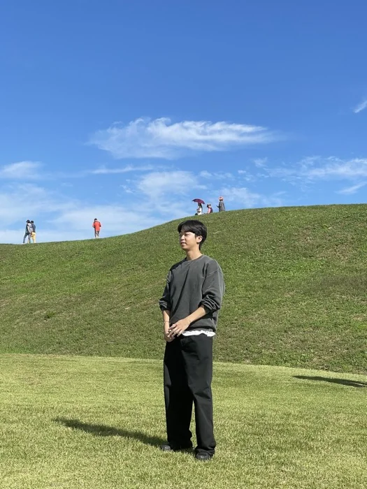

I'm an AI researcher at TelePIX. My work focuses on machine learning for Earth observation, aiming to derive real-world value from satellite imagery for environmental monitoring and climate change.
